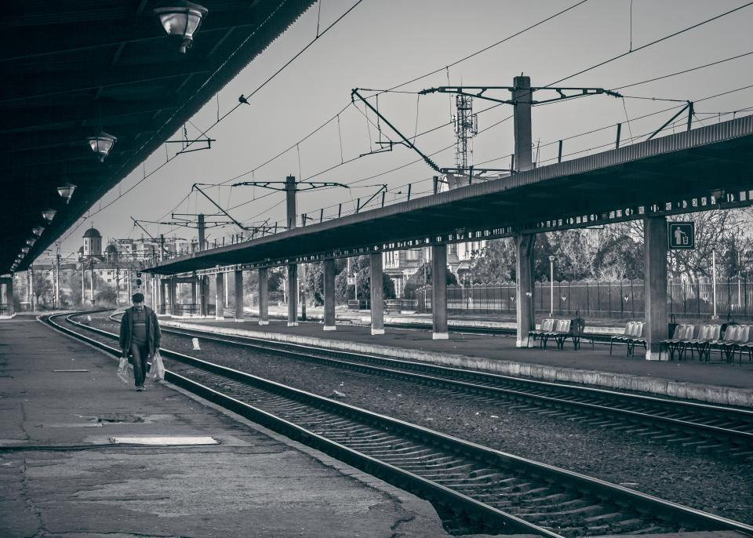

Om Evedal
Evedal började 1974 som Växjös kommunala värmeverk vid Evedalsvägen, ett av de första i landet som bytte olja mot flis från sågverken i Kronoberg. Under 1990-talet slogs verket ihop med elva andra kommunala värmebolag i Småland och Halland, och 2009 noterades koncernen.
Evedal eldar skogens restprodukter i kraftvärmeverk, värmer 46 städer och fångar koldioxiden ur röken innan den når atmosfären.
Evedal började 1974 som Växjös kommunala värmeverk vid Evedalsvägen, ett av de första i landet som bytte olja mot flis från sågverken i Kronoberg. Under 1990-talet slogs verket ihop med elva andra kommunala värmebolag i Småland och Halland, och 2009 noterades koncernen.
Evedal har i dag 5 900 medarbetare, 64 kraftvärmeverk och värmeverk och omsätter 26 miljarder kronor. Vi säljer fjärrvärme i 46 städer, el till nätet, biokol till jordbruket och – som första nordiska energibolag – negativa utsläpp till företag som vill kompensera det de inte kan undvika.

Grenar, toppar och bark blir värme för 900 000 hem
Evedal började 1974 som Växjös kommunala värmeverk vid Evedalsvägen, ett av de första i landet som bytte olja mot flis från sågverken i Kronoberg. Under 1990-talet slogs verket ihop med elva andra kommunala värmebolag i Småland och Halland, och 2009 noterades koncernen.
Från oljepanna till minusutsläpp
Ett halvsekel av att värma småländska städer med det skogen lämnar efter sig.
- 1974Växjös värmeverk byter olja mot flis från sågverken i Kronoberg.
- 1983Sandviksverket blir kraftvärmeverk och börjar producera el.
- 1997Tolv kommunala värmebolag i Småland och Halland går samman i Evedal.
- 2009Notering på Nasdaq Stockholm.
- 2015Första fjärrvärmenätet i Litauen köps.
- 2022Pilotanläggning för koldioxidavskiljning i Växjö.
- 2025Biokolsverket i Alvesta invigs.
Mitt i skogsbygden
Verken ligger nära både städerna som behöver värme och skogarna som levererar bränslet. Inget verk ligger mer än 15 mil från sitt bränsle.
- Växjö – huvudkontorEvedalsvägen 2. Koncernledning, driftcentral Syd och Sandviksverket.
- JönköpingTorsviksverket och den andra CCS-anläggningen.
- HalmstadFjärrvärme och fjärrkyla för Hallandskusten.
- KalmarVärme till Kalmar län med koncernens största värmelager.
- KarlskronaFjärrvärme i Blekinge och driftcentral Öst.
- AlvestaBiokolsverket och bränsleterminal vid stambanan.
- KaunasEvedal Šiluma UAB, fjärrvärme i Kaunas och Šiauliai.
- JelgavaEvedal Siltums SIA, fjärrvärme i Lettland.
Senaste nyheterna och pressmeddelanden

Värmeleveranserna ökade med 3 procent och investeringarna i CCS uppgick till 2,9 miljarder kronor.

Absorptionstornet för koldioxidavskiljning har lyfts på plats vid Sandviksverket.

Ett nordiskt flygbolag köper 2,1 miljoner ton negativa utsläpp under tio år.

Omsättningen ökade till 26 miljarder kronor efter en kall vinter.
Kontakta oss
- Huvudkontor
- Evedalsvägen 2
352 63 Växjö - Telefon
- 070-174 06 17
- E-post
- info@evedal.se
- Öppettider
- Kundservice vardagar 8–16.30, driftlarm dygnet runt